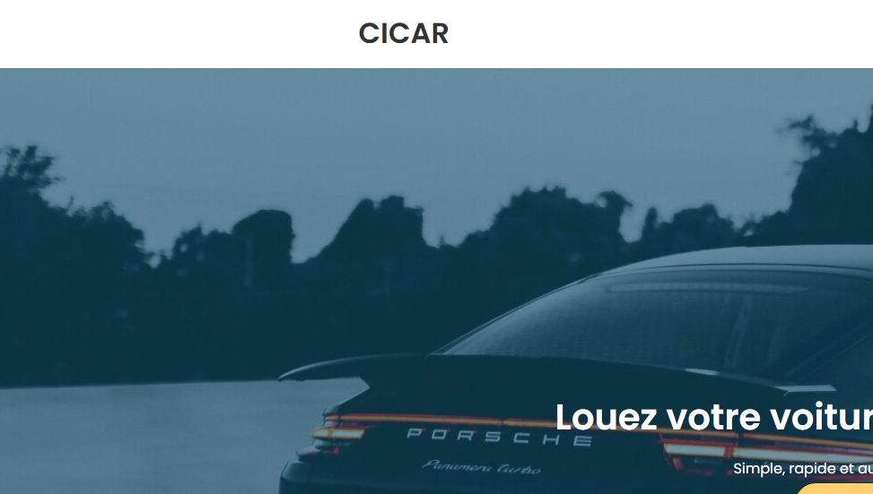
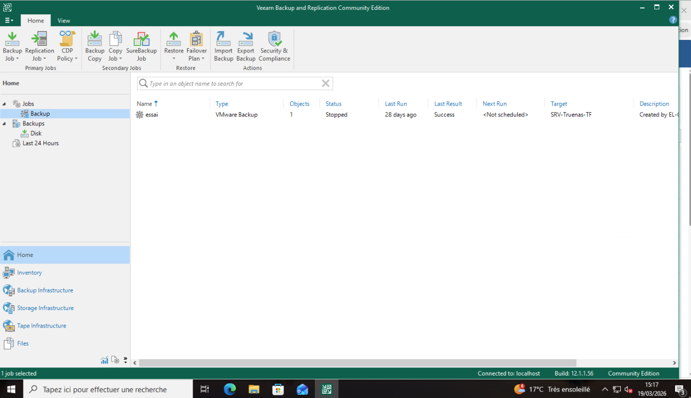

A
La demande
Présentation
CICAR est une société de location automobile aux Îles Canaries, avec un siège à Tenerife et plusieurs agences locales interconnectées par VPN IPsec. L'agence d'El Hierro (Valverde) utilise le réseau 192.168.54.0/24.
Suite à une panne inter-îles ayant paralysé les réservations, la direction souhaite externaliser les serveurs de réservation localement, avec un mécanisme de load balancing et une sauvegarde automatique vers le NAS du siège.
Objectifs du projet
- Architecture trois-tiers : HAProxy en DMZ → 2 serveurs web (LAN) en miroir
- Load balancing round-robin avec détection de panne
- Sauvegardes quotidiennes des VMs vers NAS RAID-5 (siège) via Veeam
- Sauvegarde des configurations des équipements réseau (Stormshield, switch, AP)
- Tests de basculement et mise à jour de la documentation
B
Le plan
Plan d'adressage IP
| Zone / Machine | Rôle | Adresse IP |
|---|
| Stormshield SNS 310 | Pare-feu / VPN (LAN) | 192.168.54.254 |
| ESXi Principal | Hyperviseur LAN | 192.168.54.1 |
| AD/DNS/DHCP (VM) | Windows Server 2019 | 192.168.54.10 |
| SRV-EL-WEB-01 | Apache + PHP + MariaDB | 192.168.54.15 |
| SRV-EL-WEB-02 | Miroir WEB-01 | 192.168.54.16 |
| SRV-EL-PROXY | HAProxy (DMZ) | 192.168.64.1 |
| Siège NAS RAID-5 | Destination sauvegardes Veeam | 192.168.57.0/24 (VPN) |
Schéma d'infrastructure
📡
Schéma réseau complet
Internet → Stormshield (WAN) → Zones LAN/DMZ → HAProxy → WEB-01/WEB-02. Tunnel VPN IPsec vers siège Tenerife pour sauvegardes.
schema_reseau_cicar.pdf
C
Le projet
🏗️ 1. Architecture trois-tiers
Les requêtes HTTP/HTTPS arrivent sur le pare-feu Stormshield, sont NATées vers HAProxy en DMZ (192.168.64.1). HAProxy distribue la charge en round-robin vers les deux serveurs web situés dans le LAN (192.168.54.15 et 192.168.54.16).
🛡️
PHOTO 1 — Règles de filtrage Stormshield
Console Stormshield : règles autorisant HTTP/HTTPS depuis WAN vers DMZ (HAProxy) et DMZ vers LAN (WEB-01, WEB-02).
 Capture d'écran 2026-03-30 122922.png
Capture d'écran 2026-03-30 122922.png
⚙️ 1.1 Configuration Apache — Serveurs web
Chaque serveur héberge un site indépendant. Le virtual host Apache est configuré pour répondre sur le domaine el-cicars.es et servir les fichiers depuis /var/www/el-cicars.
# /etc/apache2/sites-available/el-cicars.conf (WEB-01 & WEB-02)
<VirtualHost *:80>
ServerName el-cicars.es
ServerAlias www.el-cicars.es
DocumentRoot /var/www/el-cicars
ErrorLog ${APACHE_LOG_DIR}/el-cicars_error.log
CustomLog ${APACHE_LOG_DIR}/el-cicars_access.log combined
</VirtualHost>
# Activation du site et redémarrage
a2ensite el-cicars.conf
systemctl reload apache2
⚖️ 2. Load Balancing HAProxy
HAProxy est configuré en mode HTTP, avec round-robin et health checks actifs. En cas de panne d'un serveur web, le trafic bascule automatiquement sur l'autre.
# /etc/haproxy/haproxy.cfg (extrait)
frontend http_front
bind *:80
default_backend web_cluster
backend web_cluster
balance roundrobin
option httpchk GET /
server web01 192.168.54.15:80 check
server web02 192.168.54.16:80 check
📄
PHOTO 2 — Configuration HAProxy
Fichier /etc/haproxy/haproxy.cfg avec frontend HTTP, backend en round-robin et les serveurs WEB-01 et WEB-02.
 Capture d'écran 2026-03-30 124849.png
Capture d'écran 2026-03-30 124849.png
🔁 2.1 Test de basculement — Failover HAProxy
Pour valider la continuité de service, le serveur WEB-01 a été arrêté volontairement. HAProxy a détecté la panne via le health check (option httpchk GET /) et a basculé automatiquement l'intégralité du trafic vers WEB-02, sans interruption côté client.
- Arrêt simulé :
systemctl stop apache2 sur WEB-01
- Délai de détection : ~2 secondes (intervalle health check par défaut)
- Résultat : WEB-02 prend le relais, le site reste accessible
- Retour à la normale : redémarrage d'Apache sur WEB-01 → round-robin reprend automatiquement
📌 Les deux serveurs hébergent des sites indépendants. En cas de panne de l'un, l'autre assure la continuité sans synchronisation nécessaire.
🟢
WEB-01 — Site A (.54.15)

Site accessible directement sur WEB-01. En cas de panne, HAProxy retire ce backend et bascule sur WEB-02.
🔵
WEB-02 — Site B (.54.16)

Site indépendant sur WEB-02. Prend le relais automatiquement si WEB-01 est indisponible.
📌 Le health check HAProxy (option httpchk GET /) détecte la panne en ~2 secondes et redirige le trafic sans intervention manuelle.
💾 3. Sauvegardes manuelles Veeam vers NAS siège
Veeam Backup & Replication est installé au siège de Tenerife. Les sauvegardes des VMs de l'agence El Hierro (WEB-01, WEB-02, PROXY, AD) sont déclenchées manuellement par l'administrateur via la console Veeam, et transférées via le tunnel VPN IPsec vers le NAS RAID-5 du siège (SRV-Truenas-TF).
📌 La sauvegarde est manuelle à ce stade du projet. La planification automatique (job récurrent) est prévue en évolution.
📀
PHOTO 3 — Veeam Backup & Replication : jobs actifs
Console Veeam montrant le job de sauvegarde "essai" pour l'agence El Hierro.
Statut : Success — Destination : NAS SRV-Truenas-TF (siège Tenerife)

veeambackup.png
🔧 4. Sauvegarde des configurations des équipements d'interconnexion
Les fichiers de configuration du pare-feu Stormshield, du switch TP-Link SG-3424 et du point d'accès WiFi sont exportés et stockés sur le NAS du siège.
📁
PHOTO 4 — Export configuration Stormshield
Interface web Stormshield : Système → Maintenance → Sauvegarde de configuration
Téléchargement du fichier de configuration SN310A41KL095A7_2026-03-30.na
La sauvegarde est ensuite stockée sur le NAS du siège.
 Capture d'écran 2026-03-30 132300.png
Capture d'écran 2026-03-30 132300.png
# Exemple CLI sauvegarde switch TP-Link
ssh admin@192.168.54.20
copy startup-config tftp 192.168.54.10 backup_switch_elhierro.cfg
Vérifications finales
# État des services sur WEB-01
systemctl status apache2
# Logs HAProxy
tail -f /var/log/haproxy.log
# Test de continuité DNS
nslookup el-cicars.es 192.168.54.10
✅
Livrables PPE 2 validés
✔ Architecture trois-tiers opérationnelle
✔ Load balancing HAProxy avec round-robin
✔ Sauvegardes Veeam quotidiennes vers NAS siège
✔ Sauvegarde des configurations Stormshield, switch, AP
✔ Schéma réseau et plan d'adressage mis à jour
← Retour au portfolio